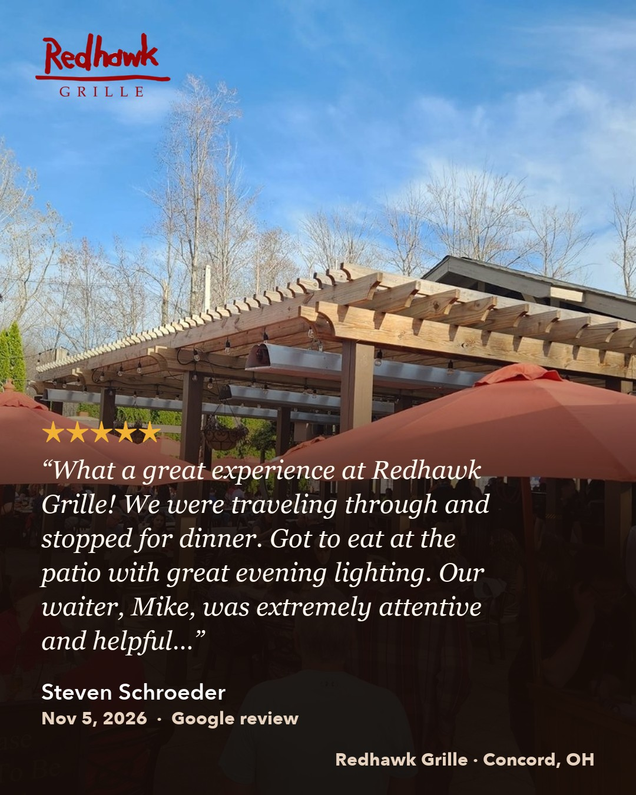
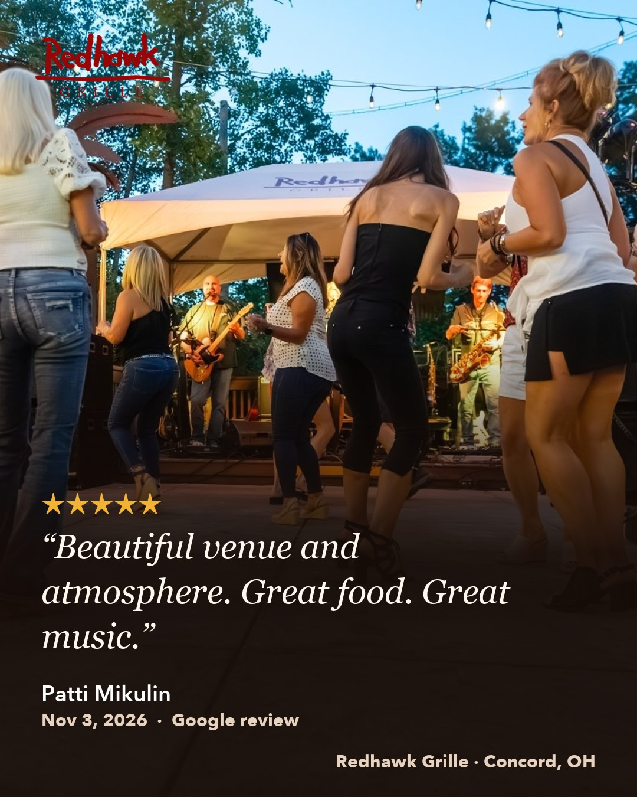
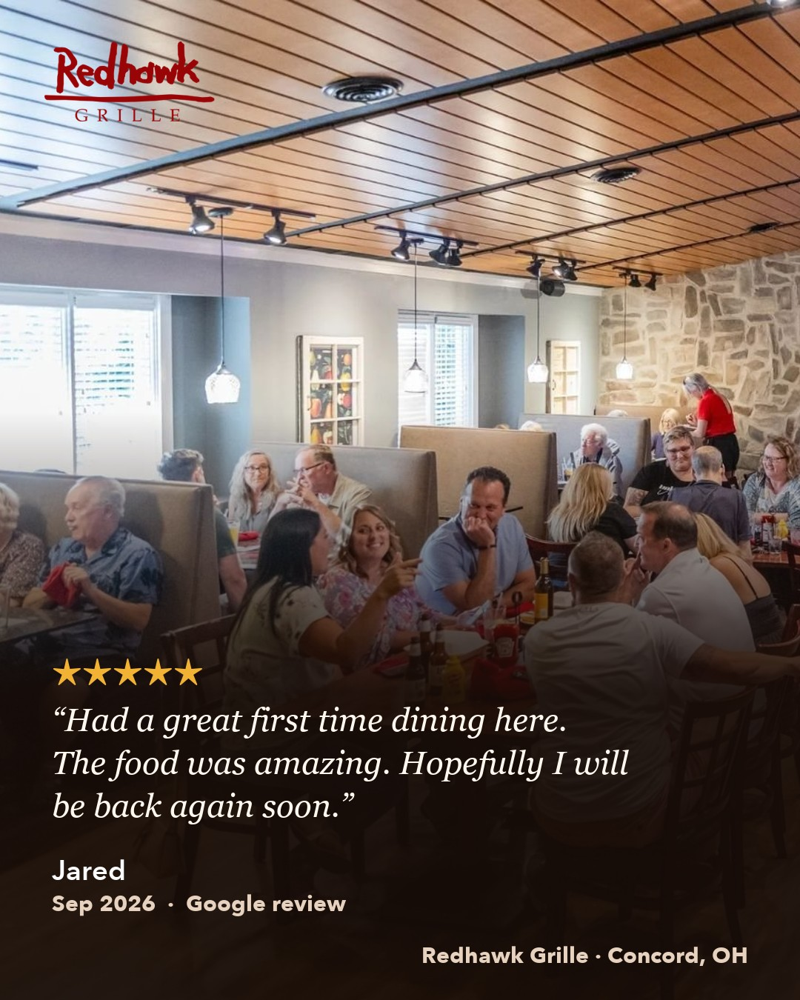

Draft, not posted. Review graphics built on real Redhawk photos:



# Redhawk Grille: drafts for approval (2026-11-28) Status: **DRAFT, NOT POSTED.** Nothing here goes live until Dad (and ideally Chris) approves. Rules applied: no phone numbers in post text (use the Call button), no unconfirmed facts (no capacities, prices, holiday hours or specials), real Redhawk photos only. --- ## A. Google posts (4) ### Post 1: Holiday parties (photo: rh-crowd-party.jpg) Button: **Book** -> https://www.redhawkgrille.com/event-request/ > Holiday party season is here, and the calendar fills fast. Bring your office, team, family or friends to Redhawk Grille for scratch-made food, two full-service bars and our wood-burning fireplace. Tell us your date and group size on our event form and our team will get back to you with options. 🎄 ### Post 2: Fireplace season (photo: fireplace still when available; fallback rh-dining-room.jpg) Button: **Learn more** -> https://www.redhawkgrille.com/ > Cold outside, cozy inside. Our wood-burning fireplace is lit and ready for comfort food season. Grab a table with friends, a drink at one of our two bars, and a plate of something made from scratch in our kitchen. ### Post 3: Live music (photo: rh-band-night.jpg) Button: **Learn more** -> https://www.redhawkgrille.com/events/ (verified 200) > Live music is a Redhawk tradition. Great bands, great food and a crowd that loves to dance. Check our events page for who's playing this week, then come see why Concord's been coming here for over 20 years. ### Post 4: Gift cards (photo: rh-steak.jpg) Button: **Buy** -> https://redhawkgrille.mygconline.com/ > Stuck on a gift? A Redhawk Grille gift card works for everyone on your list: dinner, drinks, live music nights and patio season next spring. Buy online in a minute and send it right away. --- ## B. Review replies (7 unreplied, newest first) Big finding: **most unreplied reviews are negative.** One reviewer (Scott Hays) wrote: "It's funny how the owner only responds to good reviews." Replying calmly to the bad ones matters more than thanking the good ones; future guests read these replies. Sign-off on all: "The Redhawk Grille team" (change to "Chris" if he prefers). 1. **Kati Green (4 stars, ~Nov 25): service slow, no refill** > Thank you, Kati! We're glad you loved the food, and you're right that refills shouldn't be something you have to ask for. We've shared this with our service team. Hope to see you again soon, maybe by the fireplace this winter. The Redhawk Grille team 2. **Margaret King (5 weeks ago, carryout $100+): confusing menus, sauces spilled** > Margaret, thank you for the detailed feedback, and we're sorry your carryout order arrived that way. You're right about the menus, and we're working on a single, accurate online menu. We've also talked with the kitchen about sealing sauces and packing for travel. We'd like to make this right; please ask for a manager on your next visit or reach us through our website. The Redhawk Grille team 3. **Mary (6 weeks ago): waited 20 minutes, never served, left** > Mary, we're truly sorry. Nobody should wait 20 minutes without even a glass of water, and that's not the experience we want for anyone. We've reviewed hostess and section coverage with our team because of feedback like yours. We'd welcome the chance to do better if you'll give us another try. The Redhawk Grille team 4. **Jayyy (6 weeks ago): "Food is always great, service sucks"** > Thank you for the honest feedback. We're glad the food keeps you coming back, and we're working on making the service match it. The Redhawk Grille team 5. **Ronald Smola (8 weeks ago): burnt pretzel bites, food sat 20+ minutes** > Ronald, after five years of visits you deserved much better than that Monday night. Burnt pretzel bites and food sitting under the window is on us, and we've addressed it with the kitchen and floor team. Please ask for a manager next time you're in; we'd like the chance to earn back your trust. The Redhawk Grille team 6. **Scott Hays (8 weeks ago): server disappeared, family left without eating** > Scott, we're sorry your first visit ended that way, especially with three little ones waiting. That's not acceptable and we've addressed it directly with our team. You're also right that we should answer every review, not just the good ones, and we're doing that now. We'd love to give your family the first visit you came for. The Redhawk Grille team 7. **Chase Dengate (8 weeks ago): burger value, many TVs, debit service fee, couldn't reach manager** > Chase, thank you for laying this out. We're sorry you weren't able to speak with a manager; you should always be able to, and we've made that clear to our team. We're reviewing the debit card charge you mentioned, along with the burger feedback. If you're open to it, reach out through our website so a manager can follow up with you directly. The Redhawk Grille team > ⚠️ **Ask Chris before #7 goes out:** does Redhawk add a fee for debit cards? Card-network rules generally bar surcharges on debit cards. If they do, it should be fixed before we reply. (Also unreplied, older: G A Graham, cigar smoke on patio; Jared, 5 stars; Mark Arbogast, slow service and wrong orders; Brian B, burger and Monte Cristo. Drafts available on request.) --- ## C. Review graphics on real Redhawk photos (3) - review-card-1.jpg: Steven Schroeder, patio photo - review-card-2.jpg: Patti Mikulin, live-music photo - review-card-3.jpg: Jared, dining-room photo These replace the stock-photo backgrounds Redhawk's Facebook is still using (Nov 3 and Nov 5 posts).